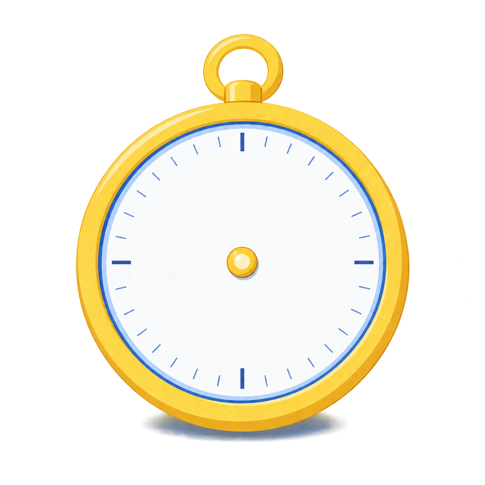
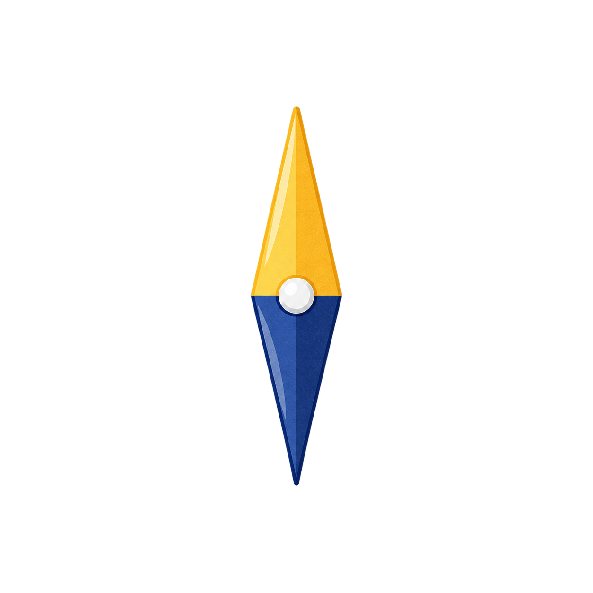
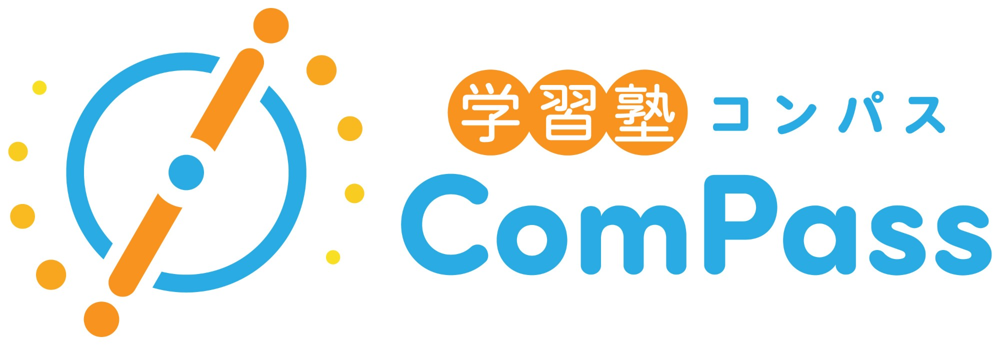
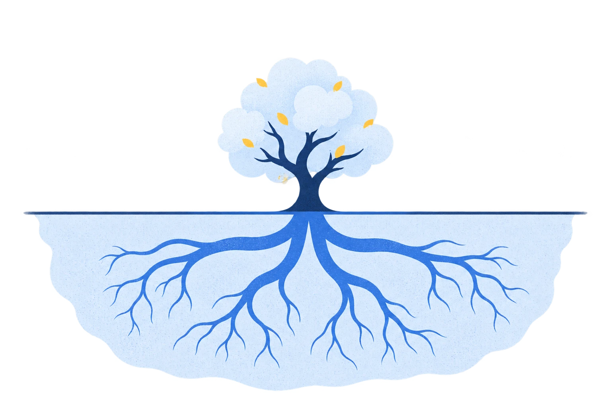
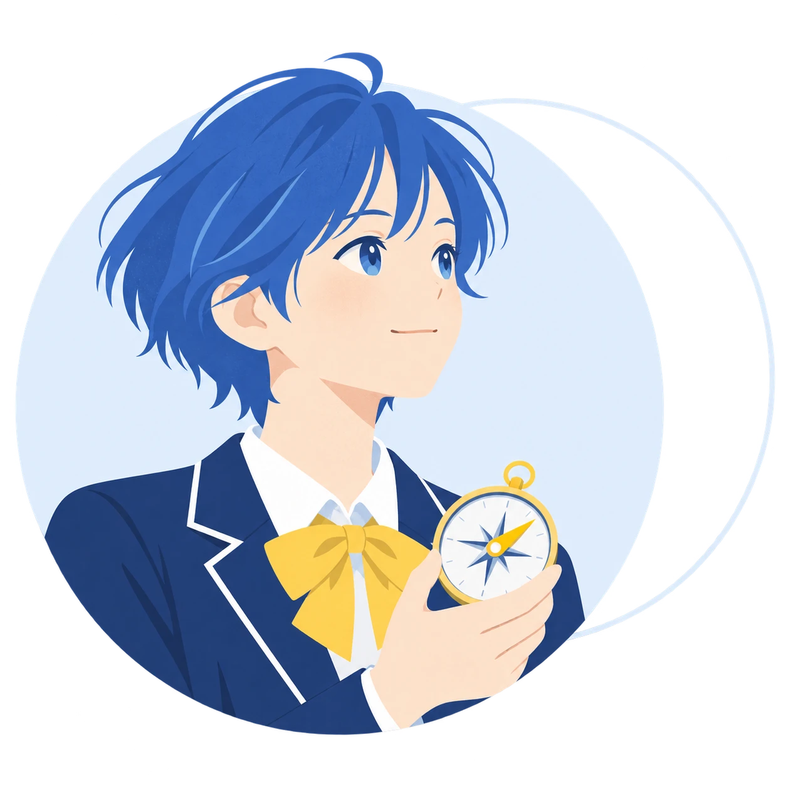

お子さまの塾選び、何で決めていますか。
合格者数だけでは、
わからない。
わが子が「根っこから」伸びる塾は？
愛媛県松山市の学習塾 ｜ 小1〜中3

小1から中3まで1年間の一貫教育
「わかる」から「好きになる」へ。
方眼ノート ｜ THE FORCE ｜ 公立トップ校受験に強い
01根を育てる
知識は、枝葉。
だから、根っこから育てる。

英単語
公式
漢字
年号
解き方
思考整理
自己信頼
感情調整
戻ってこられる心
思考力・自己信頼・心の土台を育てます。
02思考整理メソッド
頭の中を、ノートに出す。
自分で考え、自分で決める子へ。
わかった！
高橋政史氏の「方眼ノート」メソッドを活用しています。
03受験期メンタル THE FORCE
崩れない心、ではなく。
崩れても、戻れる心を。
テストの失敗
本番の緊張
心・思考・行動を、自分で整える
辻秀一氏のライフスキル理論を活用した実践プログラム。
04小1〜中3の一貫ライン
受験は、競争じゃない。
昨日の自分を、超える挑戦だ。
受験を、自分史上最高の自分になるプロセスに。

未来を、
自分で選べる子に。
compass-juku.com公式LINEは24時間受付